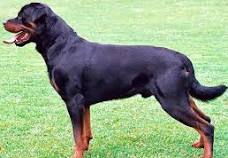

The dog is a pet animal. A dog has sharp teeth so that it can eat flesh very easily, it has four legs, two ears, two eyes, a tail, a mouth, and a nose. It is a very clever animal and is very useful in catching thieves. It runs very fast, barks loudly and attacks the strangers.
Breeds: There are approximately 400 separate breeds of purebred dogs worldwide, I will only talk about three to four breeds
- Bulldogs
- Poodle
- Pharaoh hound
- Doberman
- German shepherd
- Rottweiler 

Kind but courageous, friendly but dignified, the Bulldog is a thick-set, low-slung, well-muscled bruiser whose 'sourmug' face is the universal symbol of courage and tenacity These docile, loyal companions adapt well to town or country. You can't mistake a Bulldog for any other breed. The loose skin of the head, furrowed brow, pushed-in nose, small ears, undershot jaw with hanging chops on either side, and the distinctive rolling gait all practically scream 'I'm a Bulldog!

The Poodle, called the Pudel in German and the Caniche in French, is a breed of water dog. he breed is divided into four varieties based on size, the Standard Poodle, Medium Poodle, Miniature Poodle and Toy Poodle, Poodles are active and intelligent, and are particularly able to learn from humans. Poodles tend to live 10 to 18 years, with smaller varieties tending to live longer than larger ones.

The Pharaoh Hound, ancient "Blushing Dog" of Malta, is an elegant but rugged sprinting hound bred to course small game over punishing terrain. Quick and tenacious on scent, these friendly, affectionate hounds settle down nicely at home.

Doberman Pinschers, a breed that originated in Germany during the late 19th century, have a fascinating history deeply intertwined with their role as loyal and reliable guard dogs.

The German Shepherd is a German breed of working dog of medium to large size. The breed was developed by Max von Stephanitz using various traditional German herding dogs from 1899. It was originally bred as a herding dog, for herding sheep. Generally considered dogkind's finest all-purpose worker, the German Shepherd Dog is a large, agile, muscular dog of noble character and high intelligence. Loyal, confident, courageous, and steady, the German Shepherd is truly a dog lover's delight. German Shepherd Dogs can stand as high as 26 inches at the shoulder and, when viewed in outline, presents a picture of smooth, graceful curves rather than angles. The natural gait is a free-and-easy trot, but they can turn it up a notch or two and reach great speeds. There are many reasons why German Shepherds stand in the front rank of canine royalty, but experts say their defining attribute is character: loyalty, courage, confidence, the ability to learn commands for many tasks, and the willingness to put their life on the line in defense of loved ones. German Shepherds will be gentle family pets and steadfast guardians, but, the breed standard says, there's a 'certain aloofness that does not lend itself to immediate and indiscriminate friendships.
The Rottweiler was originally dogs bred to drive cattle to market. Later they were used to pull carts for butchers. They were among the earliest police dogs and serve with honor in the military. Most important, Rottweilers are popular family guardians and friends. Novice pet parents should beware, as these dogs are strong and intense. They need experienced care and training. Consistent, energetic pet parents will find a loving, faithful, and intelligent friend for life in a Rottweiler.
Go to the next page